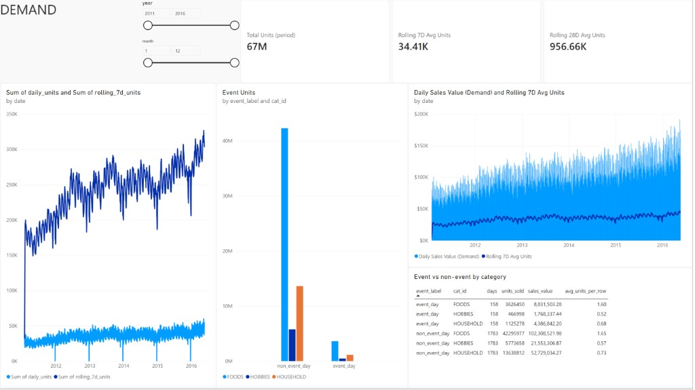

Total units
66.9M
Sum of daily_units
Analysis of the Power BI DEMAND page against
data/gold_export/
(agg_demand_trends, agg_event_sales,
dim_date).
Published report walmart_visualization — Executive, Store, Product, and Demand pages on Gold aggregates. Open in Power BI ↗
Analysis pages: 08 Executive · 09 Store · 10 Product · 11 Demand · Overview
Full catalogue: 08 Executive · Part A.
Daily Units = SUM ( 'agg_demand_trends'[daily_units] ) Daily Sales Value (Demand) = SUM ( 'agg_demand_trends'[daily_sales_value] ) Rolling 7D Units = SUM ( 'agg_demand_trends'[rolling_7d_units] ) Rolling 7D Avg Units = AVERAGE ( 'agg_demand_trends'[rolling_7d_avg_units] ) /* Use Average — never Sum across all days for a KPI card */ Rolling 28D Avg Units = AVERAGE ( 'agg_demand_trends'[rolling_28d_units] ) Event Units = SUM ( 'agg_event_sales'[units_sold] ) Event Sales Value = SUM ( 'agg_event_sales'[sales_value] )
| Measure / field | Visual | Note |
|---|---|---|
[Daily Units] | Card titled Total Units (period) | Period total 67M |
[Rolling 7D Avg Units] | Card, combo line | ≈ 34.41K |
[Rolling 28D Avg Units] | Card | ≈ 956.66K (fixed from Sum → 2bn) |
daily_units, rolling_7d_units | Left line | Prefer avg for 7D companion; see §4 |
[Daily Sales Value (Demand)] + 7D avg | Combo | Secondary Y-axis for units |
[Event Units] / columns | Event column + table | From agg_event_sales |
Latest Power BI DEMAND page: period total card labeled, 7D/28D averages, units line, event columns, sales combo, and event table with title and no bogus grand-total row.

| Dashboard visual | Gold source | Validation |
|---|---|---|
| KPI cards | agg_demand_trends |
67M · 34.41K · 956.66K match export |
| Units line | daily_units, rolling_7d_units |
Day grain OK; scale gap remains (see §4) |
| Sales combo | sales value + 7D avg units | Dual axis; Active SKUs removed (was constant 3049) |
| Event column + table | agg_event_sales |
Titled; no bad Total row; units/sales match Gold |
┌──────────────────────────────────────────────────────────────┐ │ [ year ] [ month ] [ Total Units (period) ] [ 7D Avg ] [ 28D Avg ] │ │ [ Units line: daily vs rolling 7D ] [ Event by cat ] │ │ [ Sales $ vs 7D avg (combo) ] [ Event vs non-event table ] │ └──────────────────────────────────────────────────────────────┘
| Visual | Type | Fields |
|---|---|---|
| Year / month | Slicers | dim_date[year], dim_date[month] |
| KPIs | Cards | [Daily Units], [Rolling 7D Avg Units], [Rolling 28D Avg Units] |
| Demand line | Line | X date · Y daily_units, rolling_7d_units |
| Event impact | Clustered column | X event_label · Legend cat_id · Y [Event Units] |
| Sales vs demand | Line & column | Column [Daily Sales Value (Demand)] · Line [Rolling 7D Avg Units] (secondary axis) |
| Event detail | Table | event_label, cat_id, days, units_sold, sales_value, avg_units_per_row |
dim_date.Mean rolling 7-day average units ≈ 34.4K; mean rolling 28-day unit total ≈ 957K. Both trend upward across 2011–2016 on the daily charts. The KPI card is correctly labeled Total Units (period) (67M = sum of daily units in filter), distinct from the ~34K rolling 7-day average.
| Segment | Days (per cat) | Units | Share of units |
|---|---|---|---|
| non_event_day | 1,783 | 61.7M | 92.2% |
| event_day | 158 | 5.2M | 7.8% |
Absolute event bars look small because there are far fewer event days. Fairer lens — units per day by category:
| Category | Non-event units/day | Event units/day | Lift |
|---|---|---|---|
| FOODS | 23,729 | 22,952 | −3.3% |
| HOUSEHOLD | 7,649 | 7,122 | −6.9% |
| HOBBIES | 3,238 | 2,956 | −8.7% |
In this M5 calendar definition, labeled event days are slightly
weaker on average units/day than non-event days (holidays /
closures like Christmas pull the event average down). Use the table’s
avg_units_per_row and per-day rates — not only stacked totals.
active_skus is 3,049 every day (full catalog in the
long fact). It was correctly removed from the time combo; do not bring it
back as a line series.
On both event and non-event days, FOODS is the largest unit contributor — consistent with Executive / Product pages.
daily_units (~35K) with
rolling_7d_units (~250K), so daily looks flat near the bottom.
Prefer rolling_7d_avg_units (Average) as the companion series.
python - <<'PY'
import pandas as pd
from pathlib import Path
P = Path('data/gold_export')
d = pd.read_parquet(P/'agg_demand_trends.parquet')
e = pd.read_parquet(P/'agg_event_sales.parquet')
print(d['daily_units'].sum(), d['rolling_7d_avg_units'].mean(), d['rolling_28d_units'].mean())
print(e.groupby('event_label')['units_sold'].sum())
PY
Screenshot:
assets/demand-dashboard-page4.png.
Related:
08 ·
09 ·
10.
{kind=link}